import matplotlib.pyplot as plt
import networkx as nx
import numpy as np3 The Basic Algorithm
3.1 Introduction
Recall that finding the modulus of a family \(\Gamma\) with usage matrix \(\mathcal{N}\) requires solving the optimization problem
\[ \begin{split} \text{minimize}\quad&\mathcal{E}_{p,\sigma}(\rho)\\ \text{subject to}\quad&\rho\ge 0\\ &\mathcal{N}\rho\ge \mathbf{1}. \end{split} \]
In the case that \(G\) is a relatively small graph and \(\Gamma\) is a relatively small family, this can be done by directly using any standard convex optimization solver. The matrix_modulus function in discrete_modulus/algorithms.py demonstrates this technique.
However, for many graphs and families of interest, the \(\Gamma\times E\) usage matrix \(\mathcal{N}\) is too large to compute and store on any reasonable computer. As an example, consider the following graph.
G = nx.random_geometric_graph(150, 0.16, seed=3810312)
pos = {v:d['pos'] for v,d in G.nodes(data=True)}
plt.figure(figsize=(5,5))
nx.draw(G, pos, node_size=50, node_color='black', edge_color='gray')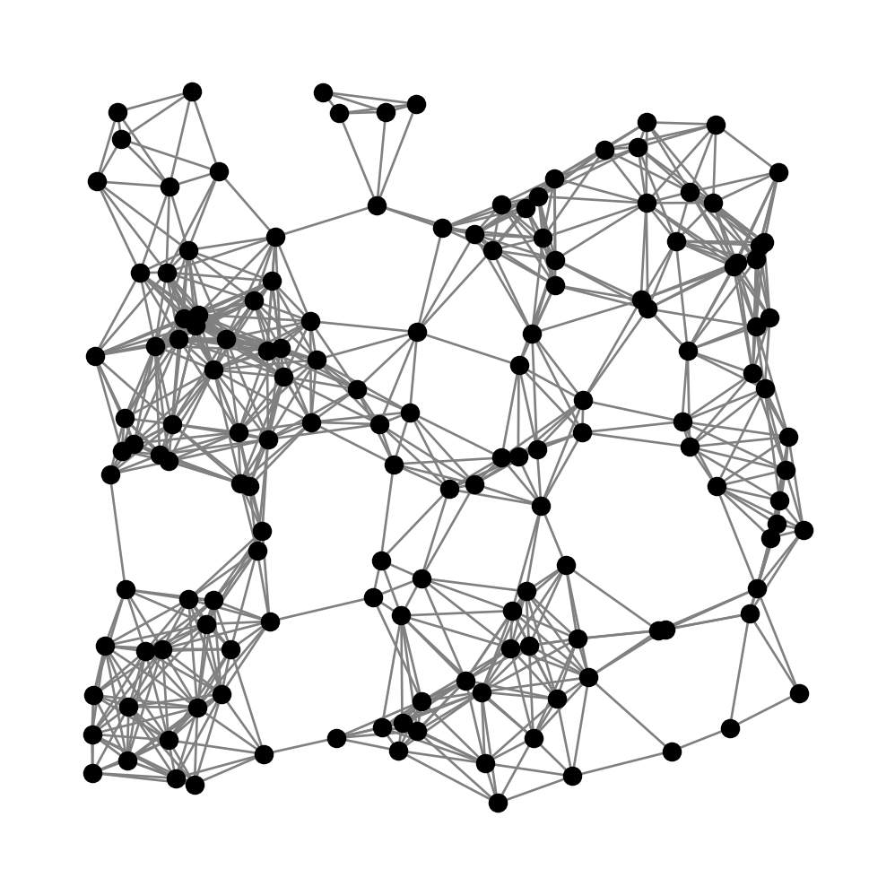
Suppose we want to compute the modulus of \(\Gamma\), where \(\Gamma\) is the family of all spanning trees of \(G\). Using Kirchhoff’s matrix tree theorem, we can compute the number of spanning trees from the spectrum of \(G\)’s Laplacian matrix. Rather than compute the number exactly in this case, the following code will give a fairly accurate approximation.
# get the eigenvalues
l = nx.laplacian_spectrum(G)
# take the product of the positive eigenvalues and
# divide by |V|
num_trees = np.prod(l[1:])/len(G.nodes())
print('G has {} edges'.format(len(G.edges())))
print('G has approximately {:.3e} trees'.format(num_trees))G has 796 edges
G has approximately 1.359e+138 treesThis is typical of a large number of modulus problems: \(\mathcal{N}\) has dimensions \(\Gamma\times E\) with \(|\Gamma|\gg|E|\). In such cases, there is an approach that seems to work quite well in many cases.
3.2 An exterior point approach
The basic exterior point approach was first described in Albin et al. (2017) and takes advantage of two important properties of modulus. The first is a property called \(\Gamma\)-monotonicity: If \(\Gamma'\subseteq\Gamma\) then
\[ \text{Mod}_{p,\sigma}(\Gamma')\le\text{Mod}_{p,\sigma}(\Gamma). \]
This is a simple consequence of the fact that if
\[ \text{if}\quad\ell_\rho(\gamma)\ge 1\quad\forall\gamma\in\Gamma\quad\text{then}\quad \ell_\rho(\gamma)\ge 1\quad\forall\gamma\in\Gamma'. \]
The second property is related to scaling properties of the length function \(\ell_\rho\) and of the energy \(\mathcal{E}_{p,\sigma}\). If \(\rho'\in\mathbb{R}^E_{\ge 0}\) an optimal density for \(\text{Mod}_{p,\sigma}(\Gamma')\) with \(\Gamma'\subseteq\Gamma\) and if
\[ \ell_{\rho'}(\Gamma) := \min_{\gamma\in\Gamma}\ell_{\rho'}(\gamma) = \alpha > 0, \]
then \(\tilde{\rho}=\alpha^{-1}\rho'\) is admissible for \(\text{Mod}_{p,\sigma}(\Gamma)\):
\[ \ell_{\tilde{\rho}}(\gamma) = \alpha^{-1}\ell_{\rho'}(\gamma) \ge \alpha^{-1}\min_{\gamma\in\Gamma}\ell_{\rho'}(\gamma) = 1. \]
This provides an upper bound on modulus:
\[ \text{Mod}_{p,\sigma}(\Gamma) \le \mathcal{E}_{p,\sigma}(\tilde{\rho}) =\kappa_p(\alpha)\mathcal{E}_{p,\sigma}(\rho') = \kappa_p(\alpha)\text{Mod}_{p,\sigma}(\Gamma'), \]
where
\[ \kappa_p(\alpha) := \begin{cases} \alpha^{-p}&\text{if }1\le p<\infty,\\ \alpha^{-1}&\text{if }p=\infty. \end{cases} \]
Thus, if we can find a \(\Gamma'\subseteq\Gamma\) and corresponding optimal density \(\rho'\) for \(\text{Mod}_{p,\sigma}(\Gamma')\) such that \(\ell_{\rho'}(\gamma)\ge 1-\epsilon_{\text{tol}}\), then we know that
\[ \text{Mod}_{p,\sigma}(\Gamma') \le \text{Mod}_{p,\sigma}(\Gamma) \le \kappa_p((1-\epsilon_{\text{tol}})^{-1})\text{Mod}_{p,\sigma}(\Gamma'). \]
In pseudocode, the basic algorithm for modulus can be written as follows.
rho' = 0
Gamma' = {}
while True:
gamma' = shortest(rho')
if length(rho', gamma') > 1 - tol:
return rho'
add gamma to Gamma
rho' = optimal_density(Gamma')
As proved in Albin et al. (2017), this algorithm is guaranteed to produce an approximation \(\rho'\approx\tilde{\rho}\) with error controlled by the tolerance tol.
The algorithm relies on two external subroutines: shortest and optimal_density. optimal_density is a function like matrix_modulus that finds (an approximation of) an optimal density for the modulus of the family \(\Gamma'\). As long as \(|\Gamma'|\ll|\Gamma|\), this will be much cheaper than solving the full modulus problem.
The second external subroutine is the function shortest. This function should take as its input a density \(\rho'\) and return as its output an object \(\gamma'\in\Gamma\) satisfying
\[ \ell_{\rho'}(\gamma') = \min_{\gamma\in\Gamma'}\ell_{\rho'}(\gamma). \]
In principle, this amounts to finding the smallest entry in the vector \(\mathcal{N}\rho'\) which, of course, would be undesirable to do brute-force since the entire purpose of this discussion is what to do when \(\mathcal{N}\) is too large to compute and hold in memory. Fortunately, for many interesting families of objects, there exist algorithms much more efficient than brute force. Examples include Kruskal’s algorithm for spanning trees and Dijkstra’s algorithm for connecting paths.
Assuming we are able to find an efficient implementation of shortest, then, the basic algorithm proceeds by growing the family \(\Gamma'\) by one object on each iteration. This is equivalent to growing its usage matrix \(\mathcal{N}'\) by one row on each iteration. Provided the algorithm can converge before \(|\Gamma'|\) grows too large, it will be much more efficient to solve this sequence of modulus problems on small subfamilies than to solve the full modulus problem. There are, of course, some fairly efficient ways to update \(\rho'\) from one iteration to the next, but for moderately sized graphs like the example above, it’s also not too bad to simply re-optimize each time a row is added to \(\mathcal{N}'\). The function modulus in discrete_modulus/algorithms.py demonstrates the approach. This function can be made quite general; since the shortest and optimal_density subproblems are outsourced, there’s not much to do besides a little bookkeeping and, if desired, some logging or output operations.
3.3 Example: Spanning tree modulus
The following code cell shows the application of the modulus function to the spanning tree modulus problem from the beginning of the chapter. Note that the algorithm can compute modulus to within a reasonable tolerance using only a tiny fraction of the rows of \(\mathcal{N}\). This code uses the matrix_modulus function we saw before along with a MinimumSpanningTree class defined in discrete_modulus/families/networkx_families.py. This class provides a simple implementation of shortest when \(\Gamma\) is the family of spanning trees. An object of this class has a NetworkX graph attached. Calling the object like a function has the effect of running Kruskal’s algorithm, with the given \(\rho'\) and returning the minimum spanning tree.
from discrete_modulus.algorithms import matrix_modulus, modulus
from discrete_modulus.families.networkx_families import MinimumSpanningTree
m = len(G.edges())
mst = MinimumSpanningTree(G)
mod, cons, rho, lam = modulus(m, matrix_modulus, mst, max_iter=400)
print()
print('modulus =', mod)
modulus = 0.03365707111077632Here is a visualization of the values of \(\rho^*\) on the graph. Notice the large groups of edges with the same color. This is not an accident. This phenomenon was explained in Albin et al. (2021).
plt.figure(figsize=(5,5))
nx.draw(
G, pos, node_size=50, node_color='black', width=2,
edge_color=rho, edge_cmap=plt.cm.Set2
)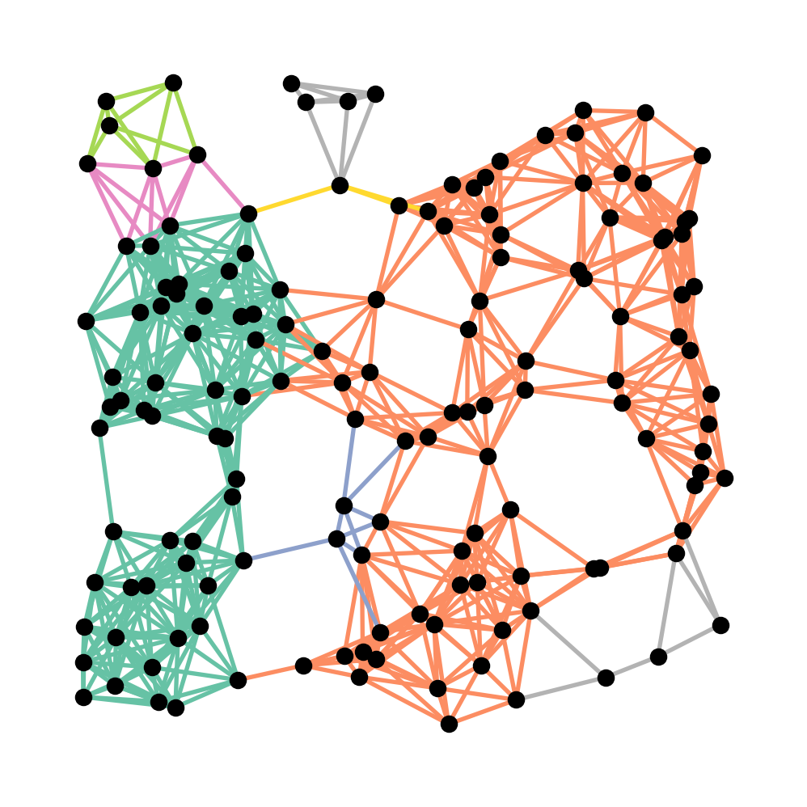
3.4 Example: Modulus of connecting paths
Now let’s consider the modulus of another family. Consider the family \(\Gamma=\Gamma(S,T)\) of paths connecting one set of nodes \(S\) (shown in blue below) to another set of nodes \(T\) (shown in red). We call such a family a connecting family of paths.
n = 12
G = nx.grid_2d_graph(2*n+1, n)
S = [(a,b) for (a,b) in G.nodes() if a == 0]
T = [(a,b) for (a,b) in G.nodes() if b == 0 and a > n]
pos = dict(zip(G.nodes(),G.nodes()))
plt.figure(figsize=(10,5))
nx.draw(G, pos, node_size=50, node_color='black', edge_color='gray')
nx.draw_networkx_nodes(G, pos, nodelist=S, node_size=50, node_color='blue')
nx.draw_networkx_nodes(G, pos, nodelist=T, node_size=50, node_color='red');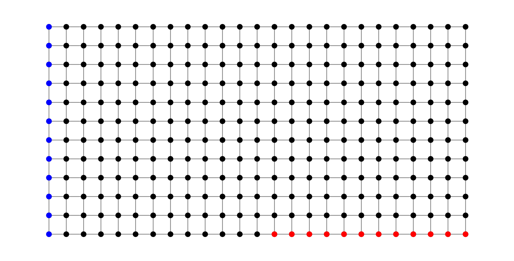
In order to compute the modulus of this family, all we need to do is replace the MinimumSpanningTree object with a ShortestConnectingPath object, as shown below. This object is essentially a wrapper for Dijkstra’s algorithm for computing the distance between to sets of points.
from discrete_modulus.families.networkx_families import ShortestConnectingPath
m = len(G.edges())
shortest =ShortestConnectingPath(G, S, T)
mod, cons, rho, lam = modulus(m, matrix_modulus, shortest, max_iter=400)
print()
print('modulus =', mod)
modulus = 0.6823788403569889Below, we plot the graph again with edges colored according to the value of \(\rho^*\). Light blue edges have small \(\rho\) values while magenta edges have higher \(\rho\) value.
plt.figure(figsize=(10,5))
nx.draw(
G, pos, node_size=0, node_color='black',
edge_color=rho, edge_cmap=plt.cm.cool, width=2
)
nx.draw_networkx_nodes(G, pos, nodelist=S, node_size=50, node_color='blue')
nx.draw_networkx_nodes(G, pos, nodelist=T, node_size=50, node_color='red');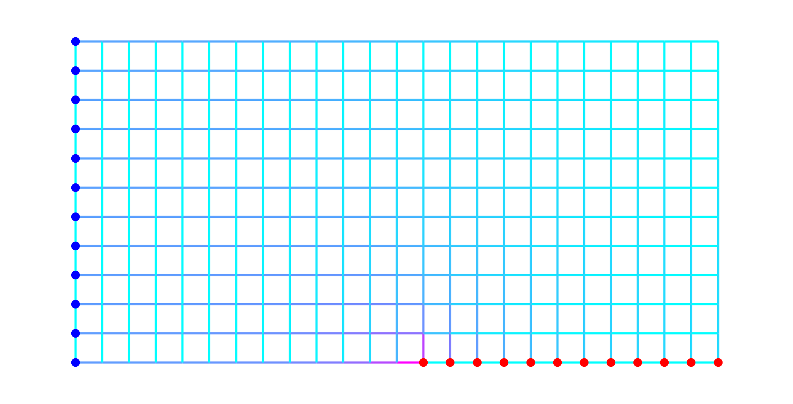
It can be a little hard for the eye to make sense of the previous plot. An alternative is the following. It turns out that, for families of connecting families of walks, the modulus problem is equivalent to a flow problem on a resistor network. (Technically, a nonlinear resistor network if \(p\ne 2\).) Details can be found in Albin et al. (2015). In the present context, this means that there exists a vertex potential \(\phi:V\to\mathbb{R}\) satisfying \(\phi=0\) on the blue nodes, \(\phi=1\) on the red nodes and
\[ \rho*(e) = |\phi(u)-\phi(v)|\qquad\text{for every }e = \{u,v\}\in E. \]
Knowing this, it is possible to recover \(\phi(v)\) for any \(v\in V\) using the formula
\[ \phi(v) = \min_{\gamma}\ell_{\rho^*}(\gamma) \]
where the minimum is taken over paths beginning at an arbitrary blue node and ending at \(v\). The following code produces a plot of \(\phi\) that can help in visualizing \(\rho^*\).
for i, (u,v) in enumerate(G.edges()):
G[u][v]['rho'] = rho[i]
potential = []
for v in G.nodes():
potential.append( nx.shortest_path_length(G, (0,0), v, weight='rho') )
plt.figure(figsize=(10,5))
nx.draw(G, pos, node_size=50, node_color='black', edge_color='gray')
nx.draw_networkx_nodes(
G, pos, node_size=50, node_color=potential, cmap=plt.cm.cool
);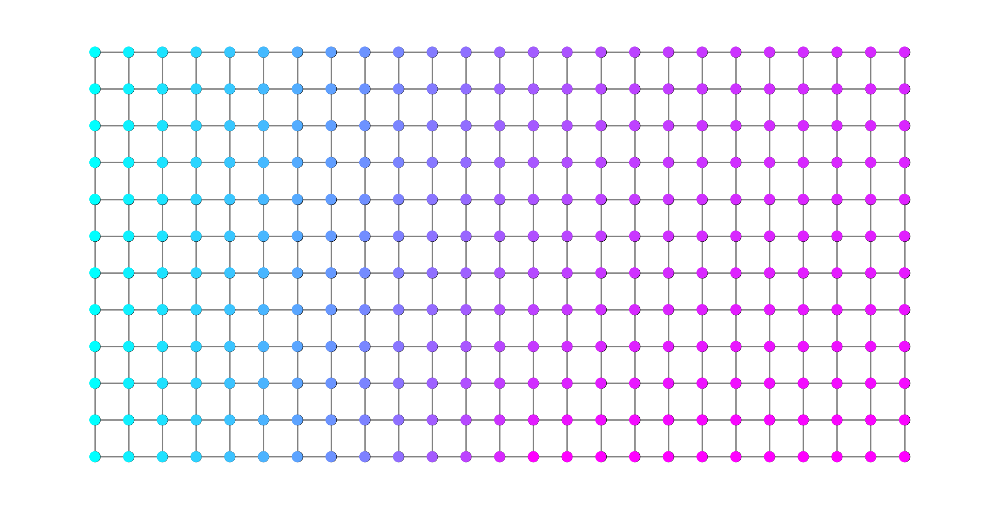
3.5 Example: Via modulus
Now imagine we identify three disjoint sets of nodes \(S\), \(T\) and \(M\). For example, in the following figure \(S\) comprises the blue nodes, \(T\) the red nodes and \(M\) the green.
S = [(a,b) for (a,b) in G.nodes() if a == 0]
T = [(a,b) for (a,b) in G.nodes() if a == 2*n]
M = [(a,b) for (a,b) in G.nodes() if abs(a-n) < n/2 and b == 0]
plt.figure(figsize=(10,5))
nx.draw(G, pos, node_size=50, node_color='black', edge_color='gray')
nx.draw_networkx_nodes(G, pos, nodelist=S, node_size=50, node_color='blue')
nx.draw_networkx_nodes(G, pos, nodelist=T, node_size=50, node_color='red')
nx.draw_networkx_nodes(G, pos, nodelist=M, node_size=50, node_color='green');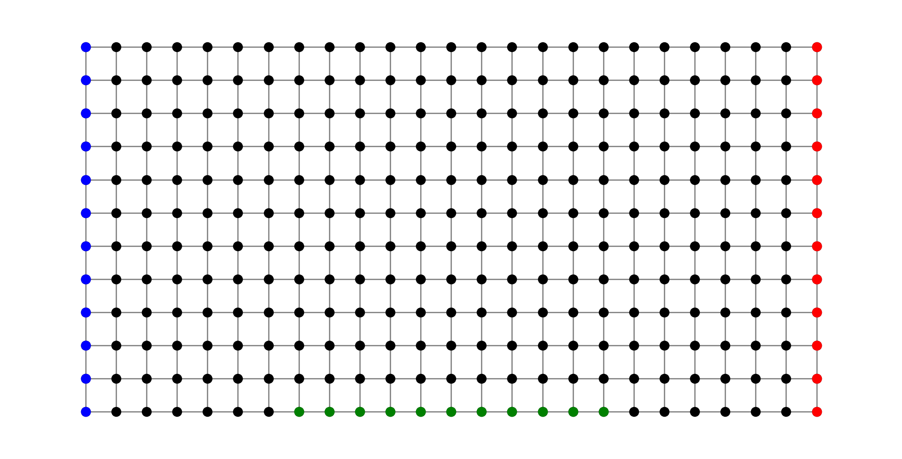
Consider the family of objects \(\gamma\) that consist of taking an arbitrary path \(\gamma_1\) from \(S\) to \(M\) and concatenating an arbitrary path \(\gamma_2\) from \(M\) to \(T\). That is,
\[ \Gamma = \Gamma(S,T;M) := \left\{\gamma_1\gamma_2 : \gamma_1\in\Gamma(S,M),\;\gamma_2\in\Gamma(M,T)\right\}. \]
We define the usage matrix on such a concatenation as
\[ \mathcal{N}(\gamma_1\gamma_2,e) = \mathcal{N}(\gamma_1,e) + \mathcal{N}(\gamma_2,e) = \begin{cases} 0 & \text{if }e\notin\gamma_1\cup\gamma_2,\\ 2 & \text{if }e\in\gamma_1\cap\gamma_2,\\ 1 & \text{otherwise}. \end{cases} \]
Since we can find the shortest object in \(\Gamma(S,M)\) and the shortest in \(\Gamma(M,T)\), we can find the shortest object in their “sum” by combining these. The class SumShortest in discrete_modulus/families/family_operators.py is designed for such a case.
from discrete_modulus.families.family_operators import SumShortest
shortest1 =ShortestConnectingPath(G, S, M)
shortest2 =ShortestConnectingPath(G, M, T)
shortest = SumShortest([shortest1, shortest2])
mod, cons, rho, lam = modulus(m, matrix_modulus, shortest, max_iter=400)
print()
print('modulus =', mod)
modulus = 0.464137738887024Below we can see the values of \(\rho^*\) on the graph.
plt.figure(figsize=(10,5))
nx.draw(
G, pos, node_size=0, node_color='black',
edge_color=rho, edge_cmap=plt.cm.cool, width=2
)
nx.draw_networkx_nodes(G, pos, nodelist=S, node_size=50, node_color='blue')
nx.draw_networkx_nodes(G, pos, nodelist=T, node_size=50, node_color='red')
nx.draw_networkx_nodes(G, pos, nodelist=M, node_size=50, node_color='green');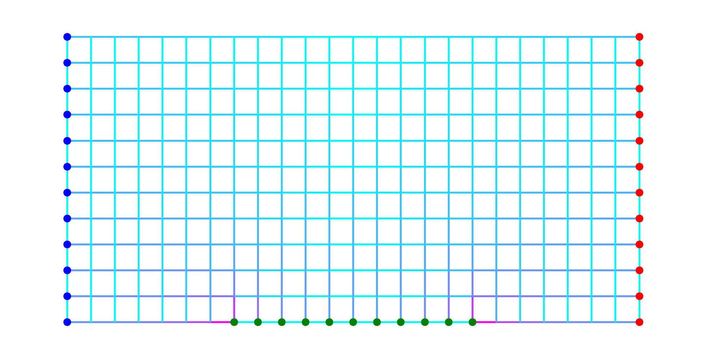
Although the concept of “potential” for this family isn’t quite as straightforward, for visualization it is perfectly reasonable to define a function \(\phi(v)\) based on \(v\)’s \(\rho^*\)-distance from, say, the set \(M\). The code below shows what that looks like.
for i, (u,v) in enumerate(G.edges()):
G[u][v]['rho'] = rho[i]
potential = []
for v in G.nodes():
potential.append( nx.shortest_path_length(G, (n,0), v, weight='rho') )
plt.figure(figsize=(10,5))
nx.draw(G, pos, node_size=50, node_color='black', edge_color='gray')
nx.draw_networkx_nodes(
G, pos, node_size=50, node_color=potential, cmap=plt.cm.cool
);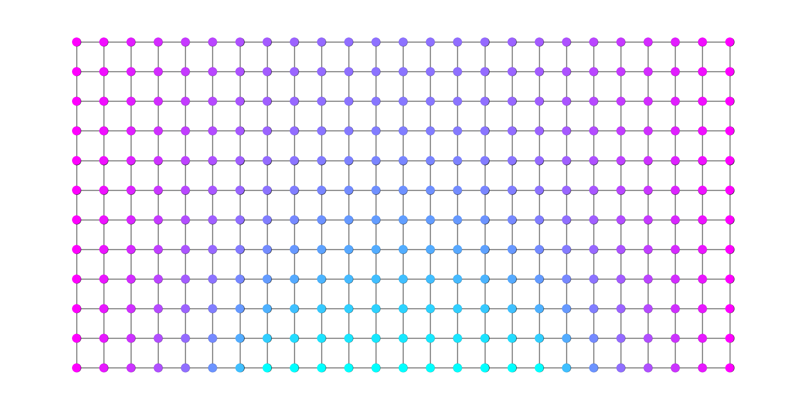
3.6 Example: A union of families
As a final example for this chapter, consider the family \(\Gamma=\Gamma(S_1,T_1)\cup\Gamma(S_2,T_2)\) consisting of the collection of all paths that either connect a blue node to a red node or connect a green node to a yellow node in the following figure.
S1 = [(a,b) for (a,b) in G.nodes() if a == 0]
T1 = [(a,b) for (a,b) in G.nodes() if b == 0 and a < 2*n and a > n]
S2 = [(a,b) for (a,b) in G.nodes() if a == 2*n]
T2 = [(a,b) for (a,b) in G.nodes() if b == 0 and a > 0 and a < n]
plt.figure(figsize=(10,5))
nx.draw(G, pos, node_size=50, node_color='black', edge_color='gray')
nx.draw_networkx_nodes(G, pos, nodelist=S1, node_size=50, node_color='blue')
nx.draw_networkx_nodes(G, pos, nodelist=T1, node_size=50, node_color='red');
nx.draw_networkx_nodes(G, pos, nodelist=S2, node_size=50, node_color='green')
nx.draw_networkx_nodes(
G, pos, nodelist=T2, node_size=50, node_color='yellow'
);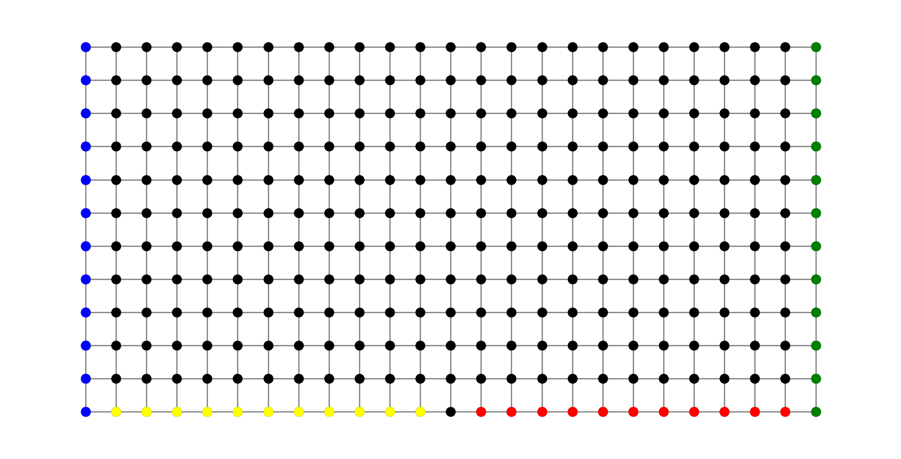
The UnionShortest class in in discrete_modulus/families/family_operators.py handles such families.
from discrete_modulus.families.family_operators import UnionShortest
shortest1 = ShortestConnectingPath(G, S1, T1)
shortest2 = ShortestConnectingPath(G, S2, T2)
union_shortest = UnionShortest([shortest1, shortest2])
mod, cons, rho, lam = modulus(m, matrix_modulus, union_shortest, max_iter=400)
print()
print('modulus =', mod)
modulus = 0.9904255457761012Here is a visualization of \(\rho^*\) on the edges.
plt.figure(figsize=(10,5))
nx.draw(
G, pos, node_size=0, node_color='black',
edge_color=rho, edge_cmap=plt.cm.cool, width=2
)
nx.draw_networkx_nodes(G, pos, nodelist=S1, node_size=50, node_color='blue')
nx.draw_networkx_nodes(G, pos, nodelist=T1, node_size=50, node_color='red');
nx.draw_networkx_nodes(G, pos, nodelist=S2, node_size=50, node_color='green')
nx.draw_networkx_nodes(
G, pos, nodelist=T2, node_size=50, node_color='yellow'
);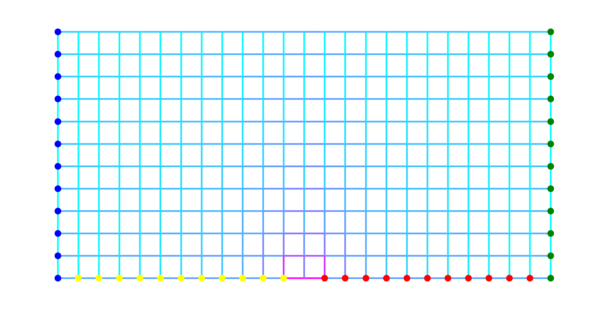
For comparison, the following two plots show \(\rho^*\)-distance to blue and to green respectively.
for i, (u,v) in enumerate(G.edges()):
G[u][v]['rho'] = rho[i]
potential1 = []
potential2 = []
for v in G.nodes():
p1 = nx.shortest_path_length(G, (0,0), v, weight='rho')
p2 = nx.shortest_path_length(G, (2*n,0), v, weight='rho')
potential1.append(p1)
potential2.append(p2)
plt.figure(figsize=(10,5))
nx.draw(G, pos, node_size=50, node_color='black', edge_color='gray')
nx.draw_networkx_nodes(
G, pos, node_size=50, node_color=potential1, cmap=plt.cm.cool
);
plt.figure(figsize=(10,5))
nx.draw(G, pos, node_size=50, node_color='black', edge_color='gray')
nx.draw_networkx_nodes(
G, pos, node_size=50, node_color=potential2, cmap=plt.cm.cool
);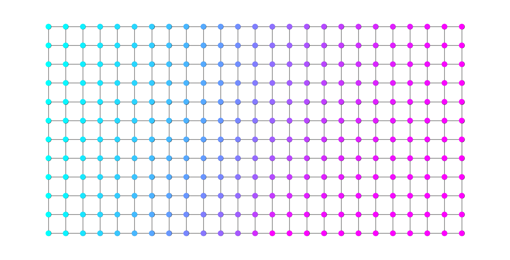
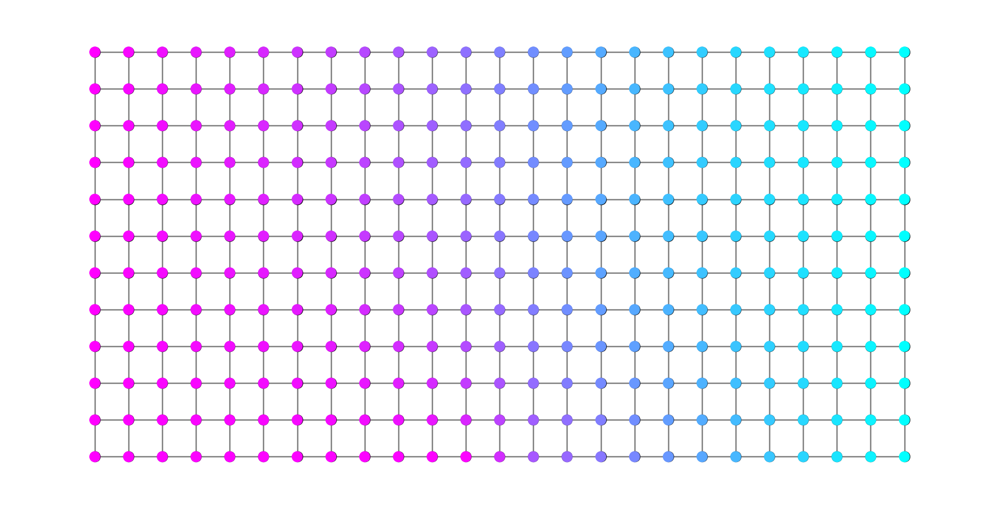